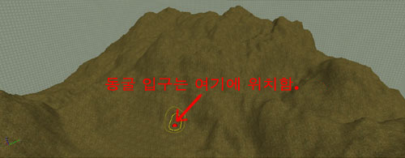
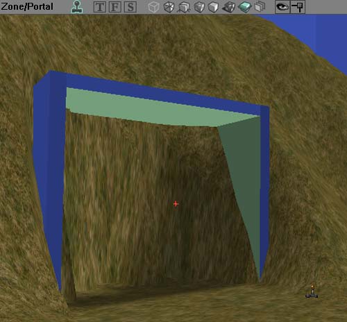
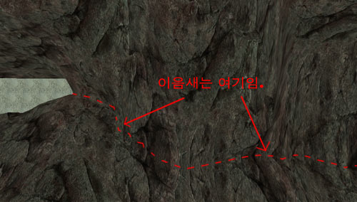
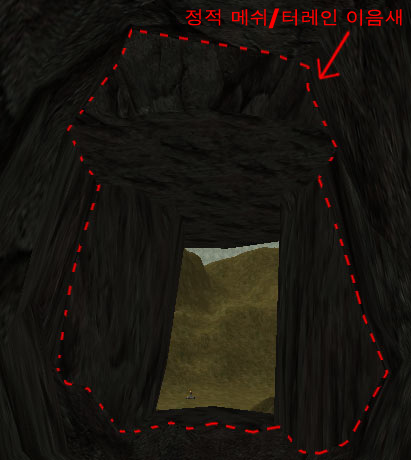
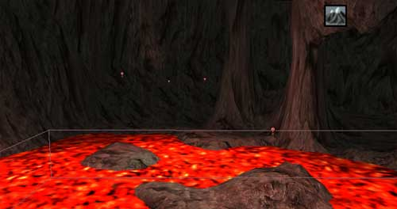

UDN
Search public documentation:
ExampleMapsCavernsKR
English Translation
日本語訳
Interested in the Unreal Engine?
Visit the Unreal Technology site.
Looking for jobs and company info?
Check out the Epic games site.
Questions about support via UDN?
Contact the UDN Staff
日本語訳
Interested in the Unreal Engine?
Visit the Unreal Technology site.
Looking for jobs and company info?
Check out the Epic games site.
Questions about support via UDN?
Contact the UDN Staff
지하 동굴
문서 요약: 터레인을 사용하여 동굴을 만드는 것에 관한 간단 명료한 가이드. 중급 스킬 레벨에 적합함. 문서 변경 내역: 문서 요약에 관해 Tom Lin(DemiurgeStudios?)이 마지막 업데이트 함. 최초 저자: Jason Lentz(DemiurgeStudios?).개요
본 예제 맵에서 2개의 터레인과 몇 가지 StaticMesh들을 사용하여 지하 동굴을 빠르고 쉽게 제작하는 방법에 대해 살펴 보겠습니다. 본 문서는 여러분께서 터레인 제작 방법 및 StaticMesh들을 레벨에 추가하는 방법을 알고 있고, 일반적인 UnrealEd 인터페이스에 익숙하다라는 것을 가정합니다.준비물
- 지상 터레인용 텍스처.
- 동굴 터레인용 텍스처.
- 동굴 입구용 StaticMesh
- 동굴에 추가하고 싶은 디테일 StaticMesh들.
동굴 디자인 계획
첫째 동굴을 은폐시킬 지상 터레인을 만들어야 합니다. 이 지상 터레인 제작시 입구를 어느 쪽으로 할지 기억해 두십시오.
여러분 동굴 전용 지상 터레인 밑에 섹션을 갖게 되면, 이젠 여러분 동굴을 위한 별도의 영역을 만들어야 합니다. 이 영역에 대한 브러쉬는 불규칙한 모양일테지만 BSP 구멍이 생기는 것을 방지하기 위해 가능한 최대로 간단한 모양을 유지하도록 하십시오.
동굴에 대한 별도의 영역을 만드는 것은 여러분 레벨을 크게 최적화 시킬 수 있을 뿐만 아니라 각기 다른 안개 짙음과 색상, 에코 리버브, 특화된 조명 조건등과 같은 완전히 다른 배경 효과를 제작할 수 있게 됩니다.동굴 터레인 삽입하기
동굴 내부용 터레인은 동굴을 은폐해야 하는 지상 터레인처럼 클 필요는 없기 때문에 내부용 터레인 제작시 크기와 규모를 설정하여 초기 최적화를 할 수 있습니다. 본 예제에서의 지상 터레인의 경우 256 x 256으로 설정되었지만, 이 새 터레인은 128 x 128으로 제작됩니다. 불필요한 콰드를 보이지 않게 함으로써 추가 콰드를 숨길 수 있기 때문에 동굴 터레인이 필요한 것보다 다소 크기가 커도 괜찮습니다.
이제, 여러분 동굴 바닥이 그랬으면 하는 그릇 모양 또는 거친 모양을 제작합니다. 동굴 터레인의 섹션을 동굴 입구가 될 부분과 접하도록 합니다.
본 예제에서의 지상 터레인의 경우 256 x 256으로 설정되었지만, 이 새 터레인은 128 x 128으로 제작됩니다. 불필요한 콰드를 보이지 않게 함으로써 추가 콰드를 숨길 수 있기 때문에 동굴 터레인이 필요한 것보다 다소 크기가 커도 괜찮습니다.
이제, 여러분 동굴 바닥이 그랬으면 하는 그릇 모양 또는 거친 모양을 제작합니다. 동굴 터레인의 섹션을 동굴 입구가 될 부분과 접하도록 합니다.
 다음, 첫 번째 동굴과 같은 방법으로 두 번째 동굴 터레인을 동일한 크기와 일반적 위치를 같게 제작합니다. 그런 다음 이 터레인의 속성을 열어 TerrainInfo 탭을 확장해 Inverted 항목을 True로 설정합니다. 이것이 동굴의 천장이 됩니다.
다음, 첫 번째 동굴과 같은 방법으로 두 번째 동굴 터레인을 동일한 크기와 일반적 위치를 같게 제작합니다. 그런 다음 이 터레인의 속성을 열어 TerrainInfo 탭을 확장해 Inverted 항목을 True로 설정합니다. 이것이 동굴의 천장이 됩니다.
 동굴의 천장과 바닥에 동일한 크기의 동일한 텍스처를 선택했다면 Top Viewport에서 두 터레인의 TerrainInfo가 정확하게 정렬되지 않아도 실행했을때 두 테레인이 잘 조화되는 것을 보실 수 있을 것입니다.
동굴의 천장과 바닥에 동일한 크기의 동일한 텍스처를 선택했다면 Top Viewport에서 두 터레인의 TerrainInfo가 정확하게 정렬되지 않아도 실행했을때 두 테레인이 잘 조화되는 것을 보실 수 있을 것입니다.

일단 동굴 터레인들을 여러분이 원하는 방향으로 설정했다면 visibility 도구로 과잉 보이지 않는 터레인 콰드를 잘라낼 수 있습니다. 이것은 Top Viewport에서 좀더 손 쉽게 실행할 수 있지만 여러분 레벨에 있는 다양한 터레인들의 bInverted 설정을 일시적으로 반대로 해야 하고/또는 여러분이 원하실때 숨기거나 보이게 할 수 있는 그 터레인만의 고유 그룹으로 터레인들을 지정해야 합니다.
입구 추가하기
이제 여러분 동굴의 대략적인 형태를 맵으로 만들었으면 여러분 동굴에 입구를 배치할 수 있습니다. StaticMesh를 추가하고 메인 지상 터레인에 포함시킵니다. 본 예제 맵에서는 간단한 큰 바위 StaticMesh를 반복적으로 사용하여 동굴로의 BSP 입구를 덮었습니다. 이제 입구를 막고 있는 보이지 않는 지상 터레인 콰드들을 개별적으로 회전시킬 수 있습니다. 입구의 동굴쪽에서 지상 밑면의 터레인을 들고 맨위 터레인을 내려 StaticMesh와 마주치게 합니다. 이제 동굴 입구를 막고 있는 것은 동굴 영역을 만드는데 사용했던 BSP뿐입니다. Zone Portal를 입구 StaticMesh를 가로지르게 배치하고 배치된 Zone Portal이 동굴 영역 BSP 볼륨의 면과 완전히 교차하고 여러분 동굴이 이제 완전하게 작동하는지 확인하십시오. 추가 작업을 해서 입구가 완전히 이음새 없게 보이게 만들 수 있습니다.
이제 입구를 막고 있는 보이지 않는 지상 터레인 콰드들을 개별적으로 회전시킬 수 있습니다. 입구의 동굴쪽에서 지상 밑면의 터레인을 들고 맨위 터레인을 내려 StaticMesh와 마주치게 합니다. 이제 동굴 입구를 막고 있는 것은 동굴 영역을 만드는데 사용했던 BSP뿐입니다. Zone Portal를 입구 StaticMesh를 가로지르게 배치하고 배치된 Zone Portal이 동굴 영역 BSP 볼륨의 면과 완전히 교차하고 여러분 동굴이 이제 완전하게 작동하는지 확인하십시오. 추가 작업을 해서 입구가 완전히 이음새 없게 보이게 만들 수 있습니다.

맵을 실행하고 테스트합니다!동굴 배경
여러분 동굴을 좀더 사실적으로 동굴 답게 보이게 할 수 있는 다양한 방법이 있습니다. 한가지 분명한 방법은 여러분의 특정 동굴에서 이루고자 하는 모양과 느낌을 가져다 주는 좀더 구체적인 StaticMesh들을 추가하는 것입니다. 동굴은 여러 다양한 형태와 크기를 가집니다(공상의 세계에서 뿐만 아니라 실제에서도). 본 섹션은 여러분 동굴을 간단한 트릭을 사용하여 아름답게 장식하는 몇 가지 다른 방법들을 소개합니다.물웅덩이와 하천
터레인을 사용하여 동굴을 제작했기 때문에 하천, 물웅덩이, 용암, 또는 그 밖의 여러분 선택의 동굴 내부 액체를 제작하는 것을 손 쉽게 알 수 있습니다. 터레인에서 페인트 도구를 사용하여 경로를 낮추고 그 위에 물 텍스처 모양의 시트를 가지고 WaterVolume을 추가하여 하천 물의 진행 경로를 페인트 합니다. 특수 볼륨 제작 방법에 대한 좀더 자세한 내용은 Volumes Tutorial 을 참조해 주십시오.
특수 볼륨 제작 방법에 대한 좀더 자세한 내용은 Volumes Tutorial 을 참조해 주십시오.
조명 및 가시성
또 다른 간단한 방법은 조명을 조절하는 것입니다. 동굴은 동굴 자체의 고유 영역내에 있기에 배경 밝기를 낮추거나 심지어 전체 동굴을 연한 색조로 처리하여 다른 색상의 미묘한 배경 조명을 가질 수 있습니다. 대부분의 동굴에서처럼 여러분 동굴내에서의 광원 소스 제작시 독특한 해결책을 필요로 한다는 것을 명심하십시오. 본 예제 맵에서는 동굴을 비추는 작은 화염과 용암 웅덩이가 있습니다.
좀더 배경 사항을 추가하려면 본 영역내에 다른 DistanceFog를 설정할 수 있습니다. 안개의 짙음과 색상에 따라 동굴이 좀더 습하고 물방울 떨어지는 동굴 또는 건조하고 연기 가득찬 용의 둥지처럼 만들 수 있습니다.
에코와 리버브(반향) [곧 자세한 내용이 추가될 것임]
다운로드
아래에서 본 예제의 내용을 포함한 암축된 아카이브를 다운로드 받을 수 있습니다.- EM_UndergroundCaverns.zip (Unreal Engine 2 빌드 2226 전용)
- EM_UndergroundCaverns_RT.zip (Unreal Engine 2 런타임 전용)